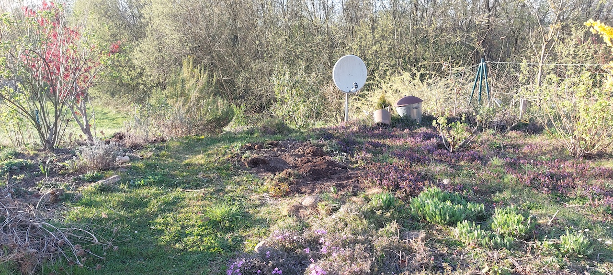

Back Yard Project: Synecoculture Experiment

Steps
- Preparing the site: noting the light conditions through the day, the soil is first piled up into a mound.
- Plants:
- Starting from a fruiting tree, I have chosen a tree that is apporpriate for the site and provides produce we want to eat. For us, this is a dwarf cherry. It will not grow too tall, provides early nectar for insects, has a beatiful bark and flowers, and delicious fruit.
- Midlevel plants, such as vegetable seedlings come next. We will plant potatoes, beetroot, and salad crops but also bulbs and other flowers and herbs.
- Seeds and beans: We will aim to include at least 7 different families of plants, mix up seeds and sprinkle freely!
- Ecosystem maintenance: time will tell which plants feel well in which position. Unwanted growth can be pulled out and left to dry out on the path. Similarly, any cut material will be left to rot at the base of the mounds, all of which will feed back into the soil.